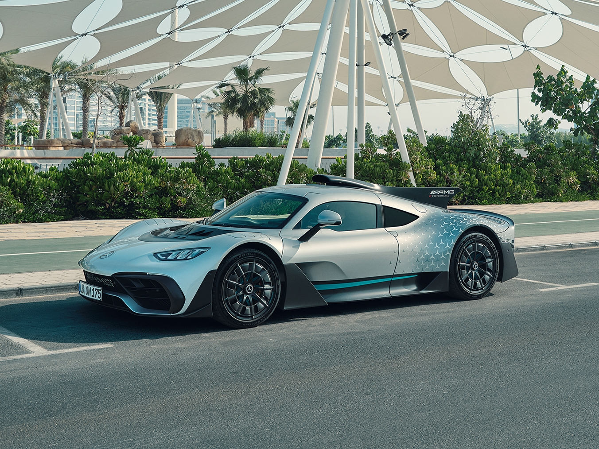

Mercedes-AMG ONE
THE ONE AND ONLY
-
Driving sensation
An experience at the limit
Incredible performance, brought directly to the road. The Mercedes-AMG ONE is sports driving in its purest form. With an acceleration of 0-200 km/h in 7.0 seconds or 0-300 km/h in 15.6 seconds, this hypercar sets the direction: the electronically regulated maximum speed of 352 km/h. Breathtaking figures that are made even more powerful thanks to driver programmes for the racetrack drawn from Formula 1. In the Strat 2 programme, the active aerodynamics, the tighter chassis tuning, the lowering of the vehicle and the full performance of all its motors all operate just as in the Formula 1 qualifying. There’s never been anything like it. But now it will always be there.
 -
Engine
Performance from another planet
The dream of bringing Formula 1 technology directly to the road has come true. With this premium-class E PERFORMANCE plug-in hybrid, a 1.6-litre V6 turbo petrol engine and four electric motors for the turbocharger, crankshaft and front axle act together to deliver an impressive 1063 hp system performance. Combined with the powerful, directly cooled 800-volt battery developed exclusively by High Performance Powertrains, the Mercedes-AMG Petronas F1 engine builder, the foundation is laid for exceptionally agile, high-precision, intensive driving at the limit. On the track. And the road.
-
Chassis and gearbox
Performance drawn from power
From unbridled power come formidable driving experiences – thanks to the super-strong, lightweight Formula 1 carbon monocoque construction in which the powerful engine and exceptional gearbox are directly integrated and that provides the exact basis for the chassis. The newly-developed, automated 7-speed manual transmission with its 4-disc carbon racing clutch is perfectly matched to this high-performance Formula 1 hybrid – and can perfectly translate the maximum speed of the combustion engine of 11,000 rpm in order to always draw maximum power. Additionally, the sporty, innovative multi-link aluminium chassis with transverse push-rod suspension struts highlights the no-compromise design of the ONE. The arrangement of this unit makes an anti-roll bar obsolete and effectively reduces rolling movements, even during very fast changes of direction. A unique composition of technology that enables whatever the race track and the street allow.
-
Sound
Unmistakably exceptional
An experience like on the home straights at Silverstone or in the hairpin by the Grand Hotel in Monte Carlo – the unique sound of the Mercedes-AMG ONE delivers a true race feeling. Wherever this hypercar is actually showing its prowess, one can already hear beforehand that true Formula 1 technology is approaching. Goosebumps guaranteed. For driver, pedestrians and fans.